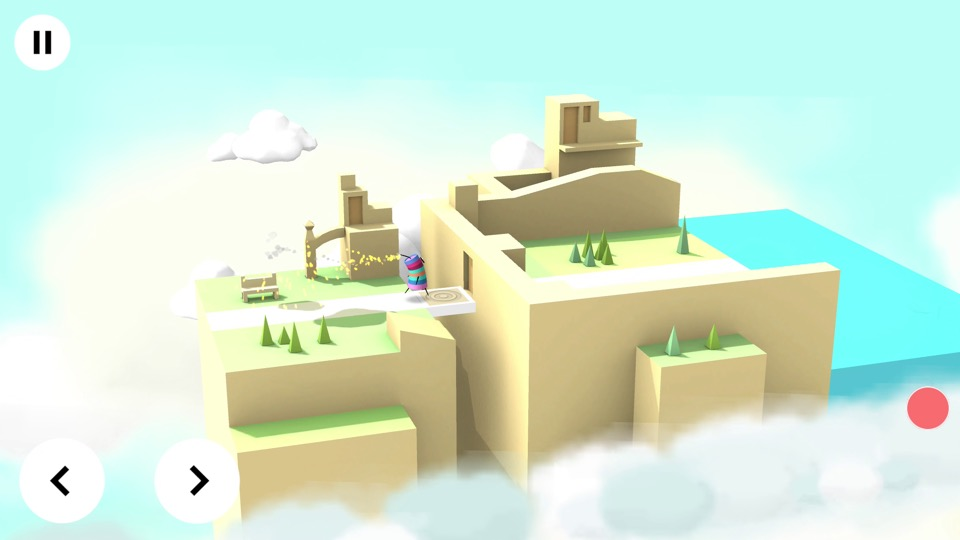
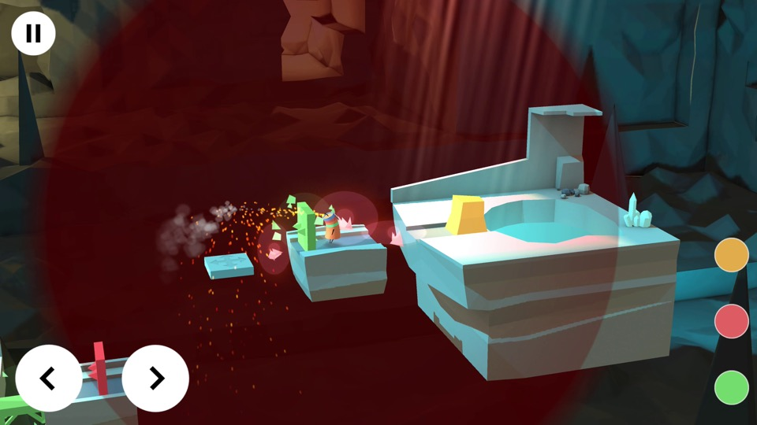
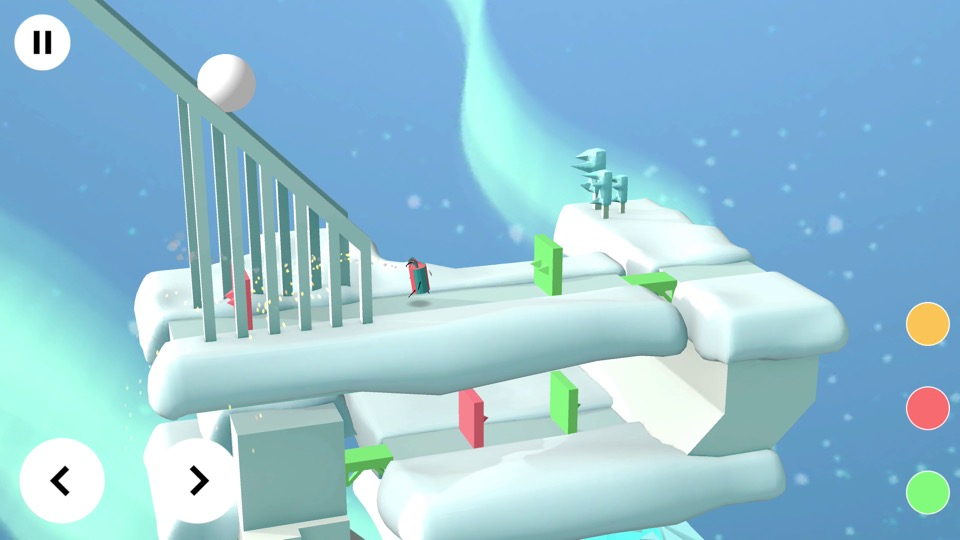
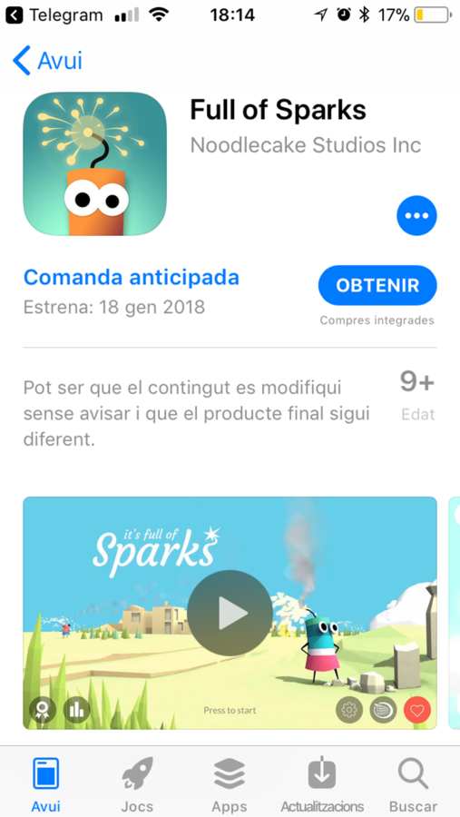
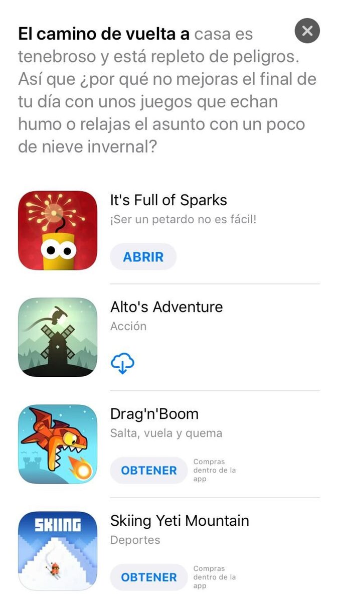
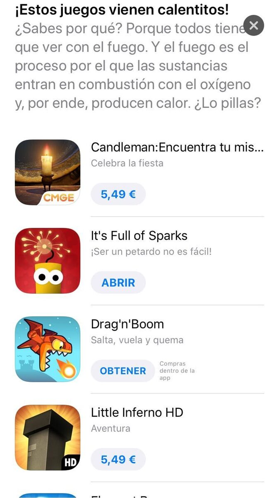
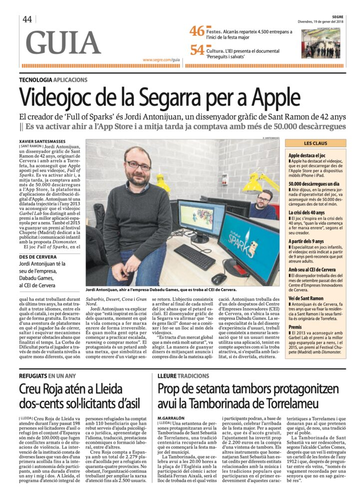

It's Full of Sparks
Aventura de plataformas cuyo protagonista es un petardo con una mecha: hay que llegar al final de cada nivel antes de que explote. Desarrollado en Unity para iOS y Android; publicado por Noodlecake Studios en el lanzamiento y trasladado después a Dabadu Games.
Ficha rápida
| Campo | Valor |
|---|---|
| Rol | Apoyo al desarrollo y mantenimiento |
| Estudio | Dabadu Games |
| Editor | Noodlecake Studios |
| Plataformas | iOS, Android |
| Lanzamiento | 18 de enero de 2018 |
| Precio | Gratis con anuncios y compras integradas |
| Género | Aventura de plataformas |
| Tienda | App Store |
Destacados
- +50.000 descargas el primer día en la App Store.
- Destacado por Apple en dos recopilaciones editoriales (abril de 2018): "Juegos de fuego y hielo" y "Juegos ardientes".
- Traducido a 31 idiomas.
- +80 niveles repartidos en 4 mundos (Suburbios, Desierto, Cueva y Gran Norte).
- Colaboración en la recta final del desarrollo y, más adelante, traslado del juego de las tiendas de Noodlecake a las de Dabadu Games con una actualización de mantenimiento (v2.2.1, 2023).
Imágenes
Jugabilidad (capturas oficiales de la App Store)



Preventa en la App Store (18/01/2018)

Destacado por Apple — "Juegos de fuego y hielo" (15/04/2018)

Destacado por Apple — "Juegos ardientes" (18/04/2018)

Prensa
- Segre — 19 de enero de 2018 — "Videojoc de la
Segarra per a Apple" (artículo de periódico).

Notas
- Valoración en la App Store: 4,6★ (5,8K).
- En el lanzamiento (2018) lo publicaba Noodlecake Studios; hoy figura bajo Dabadu Games.